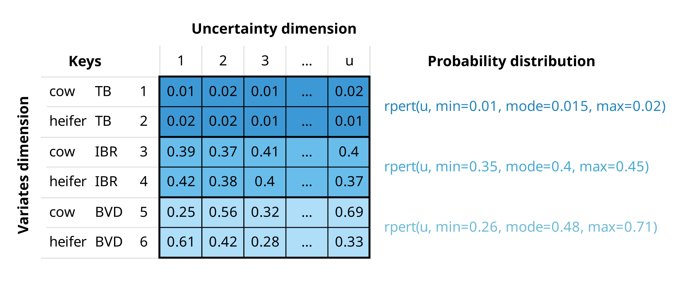
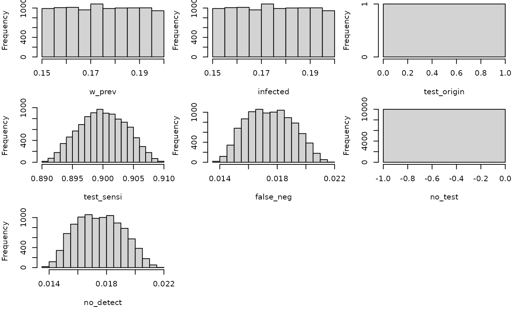
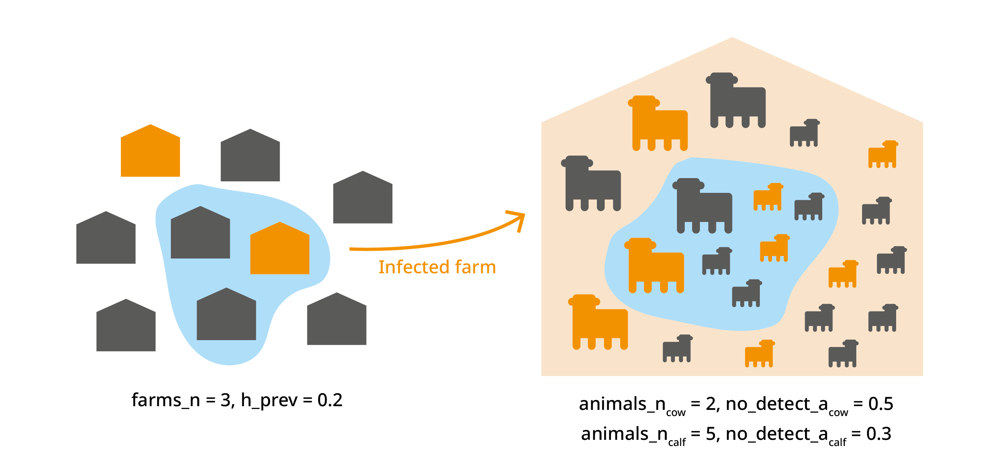

Introduction
mcmodule is a framework for building modular Monte Carlo
risk analysis models. It extends the capabilities of mc2d
to make working with multiple risk pathways, variates, and scenarios
easier. It was developed by epidemiologists, for the farmrisk project, and
now it aims to help epidemiologists and other risk modellers save time
and evaluate ambitious, complex risk pathways in R.
The mc2d R package (Pouillot and Delignette-Muller 2010)
provides tools to build and analyse models involving multiple variables
and uncertainties based on Monte Carlo simulations. The
mcmodule package includes additional tools to:
- Organize risk analysis in independent flexible modules
- Perform multivariate mcnode operations
- Automate the creation of mcnodes
- Visualize risk analysis models
Multivariate Monte-Carlo simulations
Quantitative risk analysis is the numerical assessment of risk to facilitate decision making in the face of uncertainty. Monte Carlo simulation is a technique used to model and analyse uncertainty (Vose 2008).
In mc2d, parameters are stored as
mcnode class objects. These objects are arrays of
numbers that represent random variables and have three dimensions:
variability × uncertainty × variates. For more
information, see the mc2d package
vignette.

In the mcmodule framework an mcnode is an array of
dimensions (u × 1 × i):
We combine variability and uncertainty into one dimension1 (u)
We use variates (representing different groups or categories) in the other dimension (i)
The variables that define and distinguish these variates are called keys and are stored as metadata
In this document we will use the term “uncertainty dimension” to refer to the combined dimension of variability and uncertainty.
Example
If we are buying a number of cows and heifers from a specific region, an mcnode for herd prevalence would have:
Multiple variates (rows), defined by two keys: “animal category” and “pathogen”
Probability values generated through a PERT distribution, using minimum, mode, and maximum parameters across u iterations (columns) to model the uncertainty in these estimates

An mcnode representing herd prevalence of three pathogens, tuberculosis (TB), infectious bovine rhinotracheitis (IBR), and bovine viral diarrhoea (BVD), and two animal categories (cows and heifers). The herd prevalence is the same for both animal categories, but values differ due to the stochastic nature of random sampling from the PERT distribution.
Risk assessment
This section provides a brief introduction to risk assessment in R.
Although this package is not intended for beginners in risk assessment,
it can help you understand the logic behind mcmodule and
its purpose.
A simple risk assessment
Consider a scenario where we need to purchase a cow from a farm that we know is infected with a disease our farm is free from. To reduce the risk of introducing the disease to our farm, we plan to perform a diagnostic test on the cow before bringing it to our farm. We want to calculate the probability of introducing the disease by purchasing one cow that tests negative.
We have an estimation (with some uncertainty) of both the probability of animal infection within a herd and the test sensitivity, so we want to conduct a stochastic risk assessment that properly accounts for this uncertainty.
The risk assessment for our cattle purchase can be performed using
base R (2024)
random sampling functions, or mc2d (Pouillot and Delignette-Muller
2010), a package provides additional probability
distributions (such as rpert) and other useful tools for
analysing stochastic (Monte-Carlo) simulations.
library(mc2d)
set.seed(123)
n_iterations <- 10000
# Within-herd prevalence
w_prev <- mcstoc(runif,
min = 0.15, max = 0.2,
nsu = n_iterations, type = "U"
)
# Test sensitivity
test_sensi <- mcstoc(rpert,
min = 0.89, mode = 0.9, max = 0.91,
nsu = n_iterations, type = "U"
)
# Probability an animal is tested in origin
test_origin <- mcdata(1, type = "0") # Yes
# EXPRESSIONS
# Probability that an animal in an infected herd is infected (a = animal)
infected <- w_prev
# Probability an animal is tested and is a false negative
# (test specificity assumed to be 100%)
false_neg <- infected * test_origin * (1 - test_sensi)
# Probability an animal is not tested
no_test <- infected * (1 - test_origin)
# Probability an animal is not detected
no_detect <- false_neg + no_test
mc_model <- mc(
w_prev, infected, test_origin, test_sensi,
false_neg, no_test, no_detect
)
# RESULT
hist(mc_model)
no_detect
#> node mode nsv nsu nva variate min mean median max Nas type outm
#> 1 x numeric 1 10000 1 1 0.0138 0.0175 0.0174 0.0218 0 U eachMultiple risk assessments at once
In the previous example, we calculated the risk for one specific case. However, we know that this farm is also positive for pathogen B, so it would be also interesting to calculate the risk of introducing it as well. Pathogen B has different within-herd prevalence and test sensitivity than Pathogen A.
To estimate the risk for both pathogens with our previous models, we could:
Copy and paste the code twice with different parameters (against all good coding practices)
Wrap the code in a function and call it twice using each pathogen’s parameters as arguments
Create a loop
While these options work, they become messy or computationally intensive when the number of parameters or different situations to simulate increases.
The package mc2d offers a clever solution to this
scalability problem: variates. In the previous example, our stochastic
nodes only had uncertainty dimension. However, we can now use the
variates dimension to calculate the risk of
introduction of both pathogens at the same time.
set.seed(123)
n_iterations <- 10000
# Within-herd prevalence
w_prev_min <- mcdata(c(a = 0.15, b = 0.45), nvariates = 2, type = "0")
w_prev_max <- mcdata(c(a = 0.2, b = 0.6), nvariates = 2, type = "0")
w_prev <- mcstoc(runif,
min = w_prev_min, max = w_prev_max,
nsu = n_iterations, nvariates = 2, type = "U"
)
# Test sensitivity
test_sensi_min <- mcdata(c(a = 0.89, b = 0.80), nvariates = 2, type = "0")
test_sensi_mode <- mcdata(c(a = 0.9, b = 0.85), nvariates = 2, type = "0")
test_sensi_max <- mcdata(c(a = 0.91, b = 0.90), nvariates = 2, type = "0")
test_sensi <- mcstoc(rpert,
min = test_sensi_min,
mode = test_sensi_mode, max = test_sensi_max,
nsu = n_iterations, nvariates = 2, type = "U"
)
# Probability an animal is tested in origin
test_origin <- mcdata(c(a = 1, b = 1), nvariates = 2, type = "0")
# EXPRESSIONS
# Probability that an animal in an infected herd is infected (a = animal)
infected <- w_prev
# Probability an animal is tested and is a false negative
# (test specificity assumed to be 100%)
false_neg <- infected * test_origin * (1 - test_sensi)
# Probability an animal is not tested
no_test <- infected * (1 - test_origin)
# Probability an animal is not detected
no_detect <- false_neg + no_test
mc_model <- mc(
w_prev, infected, test_origin, test_sensi,
false_neg, no_test, no_detect
)
# RESULT
no_detect
#> node mode nsv nsu nva variate min mean median max Nas type outm
#> 1 x numeric 1 10000 2 1 0.0139 0.0175 0.0174 0.0217 0 U each
#> 2 x numeric 1 10000 2 2 0.0477 0.0787 0.0783 0.1178 0 U eachWhen to use mcmodule?
The mc2d multivariate approach works well for basic
multivariate risk analysis. However, if instead of purchasing one cow,
you’re dealing with multiple cattle purchases, from different farms,
across different pathogens, scenarios, and age categories, or modelling
multiple risk pathways with different what-if scenarios, this approach
becomes unwieldy.
mcmodule addresses these challenges by providing
functions for multivariate operations and
modular management of the risk model. It automates the
process of creating mcnodes and assigns metadata to them (making it easy
to identify which variate corresponds to which data row). Thanks to this
mcnode metadata, it enables row-matching between nodes with different
variates, combines probabilities across variates, and calculates
multilevel trials. As your risk analysis grows, you can create separate
modules for different pathways, each with independent parameters,
expressions, and scenarios that can later be connected into a complete
model.
This package is particularly useful for:
Working with complex models that involve multiple pathways, pathogens, or scenarios simultaneously
Dealing with large parameter sets (hundreds or thousands of parameters)
Handling different numbers of variates across different parts of your model that need to be combined
Creating modular risk assessments where different components need to be developed independently but later integrated (for example in collaborative projects)
Performing sophisticated sensitivity analyses across multiple model components
However, for simpler analyses, such as single pathway models,
exploratory work, small models with few parameters, one-off analyses or
learning risk assessment mcmodule’s additional structure
may be unnecessary.
Installing mcmodule
Now, let’s explore the package! We can install it from CRAN:
install.packages("mcmodule")
library("mcmodule")Or install latest development version from GitHub (requires
devtool package):
# install.packages("devtools")
devtools::install_github("NataliaCiria/mcmodule")
library("mcmodule")Other recommended packages to load along with mcmodule are:
Building an mcmodule
To quickly understand the key components of an mcmodule, we’ll start by building one using the animal imports example included in the package.
Data
Let’s consider a scenario where we want to evaluate the risk of introducing pathogen A and pathogen B into our region from animal imports from different regions (north, south, east, and west). We have gathered the following data:
-
animal_imports: number of animal imports with their mean and standard deviation values per region, and the number of exporting farms in each region.animal_imports #> origin farms_n animals_n_mean animals_n_sd #> 1 nord 5 100 6 #> 2 south 10 130 10 #> 3 east 7 140 12 -
prevalence_region: estimates for both herd and within-herd prevalence ranges for pathogens A and B, as well as an indicator of how often tests are performed in originprevalence_region #> pathogen origin h_prev_min h_prev_max w_prev_min w_prev_max test_origin #> 1 a nord 0.08 0.10 0.15 0.2 sometimes #> 2 a south 0.02 0.05 0.15 0.2 sometimes #> 3 a east 0.10 0.15 0.15 0.2 never #> 4 b nord 0.50 0.70 0.45 0.6 always #> 5 b south 0.25 0.30 0.37 0.4 sometimes #> 6 b east 0.30 0.50 0.45 0.6 unknown -
test_sensitivity: estimates of test sensitivity values for pathogen A and Btest_sensitivity #> pathogen test_sensi_min test_sensi_mode test_sensi_max #> 1 a 0.89 0.90 0.91 #> 2 b 0.80 0.85 0.90
Now we will use dplyr::left_join() to create our imports
module data:
Data keys
From now on we will use only the merged imports_data
table. However, it is useful to understand which input dataset each
parameter comes from, as each dataset provides information for different
keys. In this context, keys are fields that (combined) uniquely identify
each row in a table. In our example:
animal_importsprovided information by region of"origin"prevalence_regionprovided information by"pathogen"and region of"origin"test_sensitivityprovided information by"pathogen"only
The resulting merged table, imports_data, will therefore
have two keys: "pathogen" and "origin".
However, not all parameters will use both keys, for example,
"test_sensi" only has information by
"pathogen". Knowing the keys for each parameter is crucial
when performing multivariate operations, such as calculating
totals.
To make these relationships explicit in the model, we need to provide the data keys. These are defined in a list with one element for each input dataset, specifying both the columns and the keys for each dataset.
mcnodes table
With values and keys established, we still need some information to build our stochastic parameters. The mcnode table specifies how to build mcnodes from the data table. It specifies which parameters are included in the model, the type of parameters (those with an mc_func are stochastic), and what columns to look for in the data table to build these mcnodes (the name of the mcnode, or another variable in the data columns), as well as transformations that are useful to encode categorical data values into mcnodes that must always be numeric.
mcnode: Name of the Monte Carlo node (required)
description: Description of the parameter
mc_func: Probability distribution
from_variable: Column name, if it comes from a column with a name different to the mcnode
transformation: Transformation to be applied to the original column values
sensi_analysis: Whether to include in sensitivity analysis2
Here we have the imports_mctable for our example. While
the mctable can be hard-coded in R, it’s more efficient to prepare it in
a CSV or other external file. This approach also allows the table to be
included as part of the model documentation.
| mcnode | description | mc_func | from_variable | transformation | sensi_analysis |
|---|---|---|---|---|---|
| h_prev | Herd prevalence | runif | NA | NA | TRUE |
| w_prev | Within herd prevalence | runif | NA | NA | TRUE |
| test_sensi | Test sensitivity | rpert | NA | NA | TRUE |
| farms_n | Number of farms exporting animals | NA | NA | NA | FALSE |
| animals_n | Number of animals exported per farm | rnorm | NA | NA | FALSE |
| test_origin_unk | Unknown probability of the animals being tested in origin (true = unknown) | NA | test_origin | value==“unknown” | FALSE |
| test_origin | Probability of the animals being tested in origin | NA | NA | ifelse(value == “always”, 1, ifelse(value == “sometimes”, 0.5, ifelse(value == “never”, 0, NA))) | FALSE |
The data table and the mctable must complement each other:
mcnodes without an
mc_func(likefarms_n), needs the matching column name ("farms_n") in the data table-
mcnodes with an
mc_func, you need columns for each probability distribution argument in the data table. For example:h_prevwithrunifdistribution requires"h_prev_min"and"h_prev_max"animals_nwithrnormdistribution requires"animals_n_mean"and"animals_n_sd"
For encoding categorical variables as mcnodes (or any other data
transformation), you can use any R code with value as a
placeholder for the mcnode name or column name (specified in
from_variable)
Expressions
Finally, we need to write the model’s mathematical expression. These
expressions should ideally include only arithmetic operations, not R
functions (with some exceptions that will be covered later in “tricks
and tweaks”). We’ll wrap them using quote() so they
aren’t executed immediately but stored for later evaluation with
eval_model().
imports_exp <- quote({
# Probability that an animal in an infected herd is infected (a = animal)
infected <- w_prev
# Probability an animal is tested and is a false negative
# (test specificity assumed to be 100%)
false_neg <- infected * test_origin * (1 - test_sensi)
# Probability an animal is not tested
no_test <- infected * (1 - test_origin)
# Probability an animal is not detected
no_detect <- false_neg + no_test
})Evaluating an mcmodule
With all components in place, we’re now ready to create our first
mcmodule using eval_module().
imports <- eval_module(
exp = c(imports = imports_exp),
data = imports_data,
mctable = imports_mctable,
data_keys = imports_data_keys
)
#>
#> imports evaluated
#>
#> mcmodule created (expressions: imports)
class(imports)
#> [1] "mcmodule"An mcmodule is an S3 object class, and it is essentially a list that contains all risk assessment components in a structured format.
names(imports)
#> [1] "data" "exp" "node_list" "modules"The mcmodule contains the input data and mathematical
expressions (exp) that ensure traceability. All input and
calculated parameters are stored in node_list. Each node
contains not only the mcnode itself but also important metadata: node
type (input or output), source dataset and columns, keys, calculation
method, and more. The specific metadata varies depending on the node’s
characteristics. Here are a few examples:
imports$node_list$w_prev
#> $type
#> [1] "in_node"
#>
#> $mc_func
#> [1] "runif"
#>
#> $description
#> [1] "Within herd prevalence"
#>
#> $inputs_col
#> [1] "w_prev_min" "w_prev_max"
#>
#> $input_dataset
#> [1] "prevalence_region"
#>
#> $keys
#> [1] "pathogen" "origin"
#>
#> $module
#> [1] "imports"
#>
#> $mc_name
#> [1] "w_prev"
#>
#> $mcnode
#> node mode nsv nsu nva variate min mean median max Nas type outm
#> 1 x numeric 1001 1 6 1 0.15 0.175 0.175 0.2 0 V each
#> 2 x numeric 1001 1 6 2 0.15 0.175 0.173 0.2 0 V each
#> 3 x numeric 1001 1 6 3 0.15 0.176 0.176 0.2 0 V each
#> 4 x numeric 1001 1 6 4 0.45 0.524 0.524 0.6 0 V each
#> 5 x numeric 1001 1 6 5 0.37 0.385 0.385 0.4 0 V each
#> 6 x numeric 1001 1 6 6 0.45 0.525 0.525 0.6 0 V each
#>
#> $data_name
#> [1] "imports_data"
imports$node_list$no_detect
#> $node_exp
#> [1] "false_neg + no_test"
#>
#> $type
#> [1] "out_node"
#>
#> $inputs
#> [1] "false_neg" "no_test"
#>
#> $module
#> [1] "imports"
#>
#> $mc_name
#> [1] "no_detect"
#>
#> $keys
#> [1] "pathogen" "origin"
#>
#> $param
#> [1] "false_neg" "no_test"
#>
#> $mcnode
#> node mode nsv nsu nva variate min mean median max Nas type outm
#> 1 x numeric 1001 1 6 1 0.0823 0.0961 0.0962 0.111 0 V each
#> 2 x numeric 1001 1 6 2 0.0821 0.0960 0.0954 0.110 0 V each
#> 3 x numeric 1001 1 6 3 0.1501 0.1758 0.1758 0.200 0 V each
#> 4 x numeric 1001 1 6 4 0.0473 0.0789 0.0783 0.113 0 V each
#> 5 x numeric 1001 1 6 5 0.2056 0.2216 0.2216 0.237 0 V each
#> 6 x numeric 1001 1 6 6 0.4501 0.5250 0.5251 0.600 0 V each
#>
#> $data_name
#> [1] "imports_data"And now that we have an mcmodule, we can begin exploring its possibilities!
Working with an mcmodule
Visualizing
We can visualize an mc_module with the mc_network()
function. For this, you will need to have igraph (Csardi and Nepusz
2006) and visNetwork (Almende B. V. and Benoit Thieurmel
2025) installed.
In these network visualizations, input datasets appear in blue, input data files, input columns and input mcnodes appear in different shades of dark-grey-blue, output mcnodes in green, and total mcnodes (as we will see later) in orange. The numbers displayed when clicked correspond to the median and the 95% confidence interval of the first variate of each mcnode.
mc_network(imports, legend = TRUE)Summarizing
In the imports mcmodule, we can already see the raw mcnode results
for the probability of an imported animal not being detected
(no_detect). However, it’s difficult to determine which
pathogen or region these results refer to. The mc_summary()
function solves this problem by linking mcnode results with their key
columns in the data.
Note that while the printed summary looks similar to the raw mcnode, it’s actually just a dataframe containing statistical measures, whereas the actual mcnode is a large array of numbers with dimensions (uncertainty × 1 × variates),
mc_summary(mcmodule = imports, mc_name = "no_detect")
#> mc_name pathogen origin mean sd Min 2.5%
#> 1 no_detect a nord 0.09606117 0.007846092 0.08229964 0.08315677
#> 2 no_detect a south 0.09600480 0.007853480 0.08211744 0.08335069
#> 3 no_detect a east 0.17576742 0.014232780 0.15012421 0.15143865
#> 4 no_detect b nord 0.07893257 0.011945867 0.04733962 0.05755650
#> 5 no_detect b south 0.22158127 0.006342677 0.20562155 0.21003466
#> 6 no_detect b east 0.52501566 0.044450307 0.45010788 0.45180481
#> 25% 50% 75% 97.5% Max nsv Na's
#> 1 0.08935080 0.09624474 0.10277116 0.1091880 0.1106308 1001 0
#> 2 0.08962080 0.09541026 0.10270101 0.1094114 0.1103462 1001 0
#> 3 0.16410730 0.17582400 0.18797380 0.1986464 0.1999425 1001 0
#> 4 0.06985123 0.07826653 0.08704084 0.1028250 0.1130751 1001 0
#> 5 0.21693959 0.22159777 0.22614771 0.2338717 0.2372087 1001 0
#> 6 0.48700830 0.52505400 0.56319271 0.5974721 0.5999797 1001 0Calculating totals
Most of the following probability calculations are based on Chapter 5 of the Handbook on Import Risk Analysis for Animals and Animal Products Volume 2. Quantitative risk assessment (Murray 2004). More details can be found on the Multivariate operations vignette.
Single-level trials
In imports, we know the probability that an infected
animal from an infected farm goes undetected ("no_detect").
We can use the total number of animals selected per farm
("animals_n") as the number of trials
(trials_n) to determine the probability that at least one
infected animal from an infected farm is not detected
(no_detect_set).
In single-level trials, each trial is independent with the same probability of success (). For a set of trials, the probability of at least one success is:
# Probability of at least one imported animal from an infected herd is not detected
imports <- trial_totals(
mcmodule = imports,
mc_names = "no_detect",
trials_n = "animals_n",
mctable = imports_mctable
)
#> data_name is not equal for all nodes, using 'no_detect' data_name 'imports_data' for node creationThe trial_totals() function returns the mcmodule with
some additional nodes: the probability of at least one success and the
expected number of successes. These total nodes have
special metadata fields, and always include a summary by default.
# Probability of at least one
imports$node_list$no_detect_set$summary
#> mc_name pathogen origin mean sd Min 2.5%
#> 1 no_detect_set a nord 0.9999321 7.013890e-05 0.9994040 0.9997494
#> 2 no_detect_set a south 0.9999946 9.023932e-06 0.9999207 0.9999693
#> 3 no_detect_set a east 1.0000000 7.143640e-10 1.0000000 1.0000000
#> 4 no_detect_set b nord 0.9993863 9.111167e-04 0.9878926 0.9969435
#> 5 no_detect_set b south 1.0000000 8.284954e-13 1.0000000 1.0000000
#> 6 no_detect_set b east 1.0000000 0.000000e+00 1.0000000 1.0000000
#> 25% 50% 75% 97.5% Max nsv Na's
#> 1 0.9999111 0.9999592 0.9999798 0.9999942 0.9999990 1001 0
#> 2 0.9999940 0.9999979 0.9999993 0.9999999 1.0000000 1001 0
#> 3 1.0000000 1.0000000 1.0000000 1.0000000 1.0000000 1001 0
#> 4 0.9992577 0.9997108 0.9998988 0.9999820 0.9999967 1001 0
#> 5 1.0000000 1.0000000 1.0000000 1.0000000 1.0000000 1001 0
#> 6 1.0000000 1.0000000 1.0000000 1.0000000 1.0000000 1001 0
# Expected number of animals
imports$node_list$no_detect_set_n$summary
#> mc_name pathogen origin mean sd Min 2.5%
#> 1 no_detect_set_n a nord 9.589398 0.9471878 7.098067 7.925178
#> 2 no_detect_set_n a south 12.457595 1.3808264 9.034427 9.929288
#> 3 no_detect_set_n a east 24.646773 2.8240560 16.479434 19.584162
#> 4 no_detect_set_n b nord 7.888526 1.2851499 4.308618 5.606024
#> 5 no_detect_set_n b south 28.924510 2.4160939 21.816997 24.386809
#> 6 no_detect_set_n b east 73.810011 9.1186665 49.777486 56.520429
#> 25% 50% 75% 97.5% Max nsv Na's
#> 1 8.899716 9.604395 10.255537 11.39188 13.10031 1001 0
#> 2 11.445423 12.454098 13.394556 15.13293 16.59565 1001 0
#> 3 22.596941 24.540466 26.556945 30.52778 33.49197 1001 0
#> 4 6.953646 7.820599 8.794037 10.42509 11.94095 1001 0
#> 5 27.267935 28.918348 30.489151 33.80466 35.92125 1001 0
#> 6 67.359386 73.486767 80.290275 91.55168 104.93881 1001 0Multilevel trials
Simple multilevel
We can also calculate the probability that at least one infected animal from at least one infected farm is not detected, but here, we need to consider two levels: animals and farms.

We import animals from "farms_n" farms. Each farm has a
probability "h_prev" (regional herd prevalence) of being
infected. From each farm, we import "animals_n" animals. In
an infected farm, each animal has a probability "w_prev"
(within-herd prevalence) of being infected. We’ve already used this to
calculate "no_detect", which is the probability that an
infected animal is not detected.

The probability of at least one success in this hierarchical structure is given by:
Where:
trials_p represents the probability of a trial in a subset being a success
trials_n represents the number of trials in subset
subset_p represents the probability of a subset being selected
subset_n represents the number of subsets
set_p represents the probability of a at least one trial of at least one subset being a success
# Probability of at least one animal from at least one herd being is not detected (probability of a herd being infected: h_prev)
imports <- trial_totals(
mcmodule = imports,
mc_names = "no_detect",
trials_n = "animals_n",
subsets_n = "farms_n",
subsets_p = "h_prev",
mctable = imports_mctable,
)
#> data_name is not equal for all nodes, using 'animals_n' data_name 'imports_data' for node creation
# Result
imports$node_list$no_detect_set$summary
#> mc_name pathogen origin mean sd Min 2.5%
#> 1 no_detect_set a nord 0.3750658 0.019423805 0.3409096 0.3426622
#> 2 no_detect_set a south 0.2996147 0.062082135 0.1831011 0.1880185
#> 3 no_detect_set a east 0.6033211 0.044910761 0.5223697 0.5281263
#> 4 no_detect_set b nord 0.9879346 0.008092032 0.9685386 0.9700096
#> 5 no_detect_set b south 0.9591725 0.008198048 0.9436984 0.9446557
#> 6 no_detect_set b east 0.9666202 0.020854527 0.9178026 0.9227233
#> 25% 50% 75% 97.5% Max nsv Na's
#> 1 0.3584187 0.3754377 0.3919736 0.4074487 0.4093251 1001 0
#> 2 0.2502976 0.3010584 0.3531750 0.3983723 0.4010640 1001 0
#> 3 0.5654920 0.6014358 0.6445998 0.6758861 0.6789184 1001 0
#> 4 0.9820674 0.9903868 0.9947567 0.9972808 0.9975589 1001 0
#> 5 0.9519908 0.9594851 0.9664197 0.9713592 0.9717380 1001 0
#> 6 0.9515323 0.9719872 0.9843585 0.9916945 0.9921818 1001 0It also provides the probability of at least one and the expected number of infected animals by subset (in this case a farm)
# Probability of at least one in a farm
imports$node_list$no_detect_subset$summary
#> mc_name pathogen origin mean sd Min 2.5%
#> 1 no_detect_subset a nord 0.08980737 0.005660661 0.07999752 0.08048733
#> 2 no_detect_subset a south 0.03532634 0.008548798 0.02002086 0.02061238
#> 3 no_detect_subset a east 0.12443077 0.014260146 0.10017930 0.10173663
#> 4 no_detect_subset b nord 0.60225288 0.057082160 0.49932532 0.50409716
#> 5 no_detect_subset b south 0.27506880 0.014724809 0.25001588 0.25130089
#> 6 no_detect_subset b east 0.40038052 0.057432337 0.30019068 0.30633494
#> 25% 50% 75% 97.5% Max nsv Na's
#> 1 0.08493839 0.08984544 0.09471675 0.09937252 0.09994365 1001 0
#> 2 0.02839691 0.03518491 0.04263250 0.04954233 0.04996842 1001 0
#> 3 0.11226079 0.12314390 0.13738540 0.14866661 0.14980902 1001 0
#> 4 0.55256613 0.60502150 0.65011828 0.69317755 0.69972566 1001 0
#> 5 0.26187070 0.27429279 0.28778932 0.29903139 0.29996406 1001 0
#> 6 0.35105566 0.39994117 0.44787181 0.49560966 0.49994811 1001 0Multiple group multilevel trials
This trial_totals() application is beyond the scope of
this vignette, but there are cases where you might have several variates
from the same subset. For example we could deal with different animal
categories (cow, calf, bull…) from the same farm. In this case, the
infection probability of animals within the same farm is not
independent, and this should be taken into account. For more
information, see Multilevel
trials in the Multivariate operations vignette.

Aggregated totals
Until this point, all mcnode operations were element-wise, keeping
the original dimensions, and allowing uncertainties and variates to
propagate through the calculations. However, sometimes, we need to
aggregate variates to calculate totals, for example, to total risk of
introducing a pathogen across all regions. In this case, we want to
preserve the uncertainty dimension but reduce the variates dimension.
With agg_totals() we can calculate overall probabilities or
sum quantities across groups.
imports <- agg_totals(
mcmodule = imports,
mc_name = "no_detect_set",
agg_keys = "pathogen"
)
#> 3 variates per group for no_detect_set
# Result
imports$node_list$no_detect_set_agg$summary
#> mc_name pathogen mean sd Min 2.5%
#> 1 no_detect_set_agg a 0.8263790 2.558766e-02 0.7550627 0.7752397
#> 4 no_detect_set_agg b 0.9999839 1.645539e-05 0.9998917 0.9999352
#> 25% 50% 75% 97.5% Max nsv Na's
#> 1 0.8089823 0.8272920 0.8456831 0.8692203 0.8841334 1001 0
#> 4 0.9999804 0.9999895 0.9999949 0.9999985 0.9999993 1001 0Now we can visualize our mcmodule again and see all these new nodes created by the totals functions.
mc_network(imports, legend = TRUE)Working with what-if scenarios
So far, we’ve only tested our model using current data. But risk analysis is most useful when comparing different scenarios. In our example, we could compare the baseline risk with the risk if tests were always performed in all regions.
To do this this, we only need to add a column called “scenario_id”. This name is important as it is used to will recognize it specifically for scenario comparisons, not as regular variate categories. The baseline scenario should be called “0”. While not every scenario needs to contain all the variate categories included in the baseline, any variate categories present in alternative scenarios must exist in the baseline.
imports_data <- imports_data %>%
mutate(scenario_id = "0")
imports_data_wif <- imports_data %>%
mutate(
scenario_id = "always_test",
test_origin = "always"
) %>%
bind_rows(imports_data) %>%
relocate(scenario_id)
imports_data_wif[, 1:6]
#> scenario_id pathogen origin test_origin h_prev_min h_prev_max
#> 1 always_test a nord always 0.08 0.10
#> 2 always_test a south always 0.02 0.05
#> 3 always_test a east always 0.10 0.15
#> 4 always_test b nord always 0.50 0.70
#> 5 always_test b south always 0.25 0.30
#> 6 always_test b east always 0.30 0.50
#> 7 0 a nord sometimes 0.08 0.10
#> 8 0 a south sometimes 0.02 0.05
#> 9 0 a east never 0.10 0.15
#> 10 0 b nord always 0.50 0.70
#> 11 0 b south sometimes 0.25 0.30
#> 12 0 b east unknown 0.30 0.50Now we create the mcmodule and calculate the totals. Note that, since
most functions for working with mcmodules both take and return
mcmodules, you can use the pipe %>% to simplify your
workflow
imports_wif <- eval_module(
exp = c(imports = imports_exp),
data = imports_data_wif,
mctable = imports_mctable,
data_keys = imports_data_keys
)
#>
#> imports evaluated
#>
#> mcmodule created (expressions: imports)
imports_wif <- imports_wif %>%
trial_totals(
mc_names = "no_detect",
trials_n = "animals_n",
subsets_n = "farms_n",
subsets_p = "h_prev",
mctable = imports_mctable,
) %>%
agg_totals(
mc_name = "no_detect_set",
agg_keys = c("pathogen", "scenario_id")
)
#> data_name is not equal for all nodes, using 'no_detect' data_name 'imports_data_wif' for node creation
#> 3 variates per group for no_detect_set
# Result
imports_wif$node_list$no_detect_set_agg$summary
#> mc_name scenario_id pathogen mean sd Min
#> 1 no_detect_set_agg always_test a 0.7870938 2.961028e-02 0.7025825
#> 4 no_detect_set_agg always_test b 0.9999829 1.738871e-05 0.9998839
#> 7 no_detect_set_agg 0 a 0.8271197 2.586876e-02 0.7512733
#> 10 no_detect_set_agg 0 b 0.9999843 1.684724e-05 0.9998893
#> 2.5% 25% 50% 75% 97.5% Max nsv Na's
#> 1 0.7262427 0.7673428 0.7895126 0.8073118 0.8390978 0.8532887 1001 0
#> 4 0.9999316 0.9999779 0.9999893 0.9999947 0.9999985 0.9999993 1001 0
#> 7 0.7737190 0.8098454 0.8274998 0.8465280 0.8724942 0.8823499 1001 0
#> 10 0.9999340 0.9999803 0.9999903 0.9999953 0.9999987 0.9999993 1001 0Working with multiple mcmodules
As your risk analysis grows in complexity, you may need to split your model into several independent modules and then combine them.
Inputs from previous mcmodules
Often, the output from one module serves as input for another. For example, after estimating the probability that an imported animal is not detected, you may want to model the probability that this animal transmits a pathogen via direct contact.
To do this, simply pass the previous mcmodule as the
prev_mcmodule argument when creating the new module. This
makes all nodes from the previous module available for use in
expressions in the new module.
# Create pathogen data table
transmission_data <- data.frame(
pathogen = c("a", "b"),
inf_dc_min = c(0.05, 0.3),
inf_dc_max = c(0.08, 0.4)
)
transmission_data_keys <- list(transmission_data = list(
cols = c("pathogen", "inf_dc_min", "inf_dc_max"),
keys = c("pathogen")
))
transmission_mctable <- data.frame(
mcnode = c("inf_dc"),
description = c("Probability of infection via direct contact"),
mc_func = c("runif"),
from_variable = c(NA),
transformation = c(NA),
sensi_analysis = c(FALSE)
)
dir_contact_exp <- quote({
dir_contact <- no_detect * inf_dc
})
transmission <- eval_module(
exp = c(dir_contact = dir_contact_exp),
data = transmission_data,
mctable = transmission_mctable,
data_keys = transmission_data_keys,
prev_mcmodule = imports_wif
)
#> Group by: pathogen
#> no_detect prev dim: [1001, 1, 12], new dim: [1001, 1, 12], 0 null matches
#> data prev dim: [2, 3], new dim: [12, 4], 0 null matches
#>
#> dir_contact evaluated
#>
#> mcmodule created (expressions: dir_contact)
mc_network(transmission, legend = TRUE)Combining mcmodules
To merge two or more modules into a single unified model, use the
combine_modules() function. This will join their data,
nodes, and expressions, allowing you to perform further calculations or
summaries across the combined structure.
intro <- combine_modules(imports_wif, transmission)
intro <- at_least_one(intro, c("no_detect", "dir_contact"), name = "total")
#> 2 variates per group for dir_contact
#> 2 variates per group for dir_contact
#> no_detect prev dim: [1001, 1, 12], new dim: [1001, 1, 24], 0 null matches
#> dir_contact prev dim: [1001, 1, 12], new dim: [1001, 1, 24], 0 null matches
intro$node_list$total$summary
#> mc_name scenario_id pathogen origin mean sd Min
#> 1 total always_test a nord 0.01864184 0.001722597 0.01459353
#> 2 total always_test a nord 0.02370509 0.001870742 0.01924184
#> 3 total always_test a south 0.01868934 0.001745219 0.01496515
#> 4 total always_test a south 0.02367750 0.001865563 0.01861923
#> 5 total always_test a east 0.01855234 0.001674436 0.01475818
#> 6 total always_test a east 0.02861171 0.002240960 0.02276387
#> 7 total always_test b nord 0.10376668 0.015961466 0.06188676
#> 8 total always_test b nord 0.10413476 0.012723355 0.07674719
#> 9 total always_test b south 0.07648329 0.009880278 0.05044538
#> 10 total always_test b south 0.13057220 0.009530128 0.10475917
#> 11 total always_test b east 0.10377878 0.015448960 0.06096255
#> 12 total always_test b east 0.24769031 0.022338128 0.19276733
#> 13 total 0 a nord 0.09759581 0.008031210 0.08307071
#> 14 total 0 a nord 0.10224721 0.008507702 0.08645002
#> 15 total 0 a south 0.09714558 0.007822626 0.08330352
#> 16 total 0 a south 0.10173070 0.008280033 0.08626187
#> 17 total 0 a east 0.17606590 0.014269714 0.15081487
#> 18 total 0 a east 0.18449788 0.014907436 0.15696650
#> 19 total 0 b nord 0.10462950 0.012762992 0.07436241
#> 20 total 0 b nord 0.10489817 0.015723152 0.06315414
#> 21 total 0 b south 0.23710063 0.006694263 0.21909044
#> 22 total 0 b south 0.28175620 0.008963509 0.25666578
#> 23 total 0 b east 0.53795167 0.041940602 0.46301834
#> 24 total 0 b east 0.61146281 0.043084223 0.52625426
#> 2.5% 25% 50% 75% 97.5% Max nsv Na's
#> 1 0.01577198 0.01727634 0.01856005 0.02003115 0.02187540 0.02295662 1001 0
#> 2 0.02026281 0.02230448 0.02364317 0.02504929 0.02727800 0.02962124 1001 0
#> 3 0.01567118 0.01727162 0.01863359 0.02008781 0.02186627 0.02301175 1001 0
#> 4 0.02032720 0.02226212 0.02358051 0.02504635 0.02722227 0.02890008 1001 0
#> 5 0.01564087 0.01722423 0.01847063 0.01979313 0.02181840 0.02308171 1001 0
#> 6 0.02458871 0.02699695 0.02846669 0.03016160 0.03300551 0.03478318 1001 0
#> 7 0.07646553 0.09191313 0.10264578 0.11556943 0.13568311 0.14849396 1001 0
#> 8 0.08119772 0.09471157 0.10354945 0.11328839 0.12945283 0.14512739 1001 0
#> 9 0.05808618 0.06869976 0.07662859 0.08364628 0.09542524 0.10126246 1001 0
#> 10 0.11278802 0.12378312 0.13044441 0.13708526 0.14921591 0.15523800 1001 0
#> 11 0.07529536 0.09259944 0.10335903 0.11493394 0.13372123 0.14976307 1001 0
#> 12 0.20740705 0.23168462 0.24662517 0.26311527 0.29245767 0.31513411 1001 0
#> 13 0.08421563 0.09075189 0.09784627 0.10452968 0.11053958 0.11136198 1001 0
#> 14 0.08803834 0.09503238 0.10261575 0.10949245 0.11617387 0.11796002 1001 0
#> 15 0.08447858 0.09050448 0.09686338 0.10389016 0.11012443 0.11177025 1001 0
#> 16 0.08814450 0.09468725 0.10157277 0.10889514 0.11586967 0.11778942 1001 0
#> 17 0.15214975 0.16396387 0.17584465 0.18846654 0.19944215 0.20079121 1001 0
#> 18 0.15981536 0.17208015 0.18491405 0.19736348 0.20892399 0.21150583 1001 0
#> 19 0.08068174 0.09518206 0.10466374 0.11312204 0.13024624 0.14145700 1001 0
#> 20 0.07607474 0.09337515 0.10470606 0.11644788 0.13594919 0.14748013 1001 0
#> 21 0.22421345 0.23205190 0.23716986 0.24203619 0.24945933 0.25574089 1001 0
#> 22 0.26473783 0.27517730 0.28155851 0.28799086 0.29930387 0.30641192 1001 0
#> 23 0.46918916 0.50094123 0.53826630 0.57501602 0.60554120 0.61272730 1001 0
#> 24 0.53823191 0.57451359 0.61227060 0.64868864 0.68275115 0.69391415 1001 0
mc_network(intro, legend = TRUE)The combined module now contains all nodes and metadata from its components, enabling you to analyze interactions and aggregate results across the entire risk pathway.
Tricks and tweaks
Handling missing and infinite values in mcnodes
When building stochastic nodes, you may encounter missing
(NA) or infinite (Inf, -Inf)
values, especially after mathematical operations or data
transformations. These can cause issues in downstream calculations. Use
mcnode_na_rm() to clean your mcnode by replacing
problematic values with another value (usually zero):
sample_mcnode <- mcstoc(runif,
min = mcdata(c(NA, 0.2, -Inf), type = "0", nvariates = 3),
max = mcdata(c(NA, 0.3, Inf), type = "0", nvariates = 3),
nvariates = 3
)
#> Warning in (function (n, min = 0, max = 1) : NAs produced
#> Warning in (function (n, min = 0, max = 1) : NAs produced
# Replace NA and Inf with 0
clean_mcnode <- mcnode_na_rm(sample_mcnode)This is especially useful in expressions where a denominator might be
zero, resulting in Inf or NaN, but you want
the output to be zero instead.
Customizing total node names
Functions like at_least_one(),
agg_totals(), and trial_totals() automatically
generate new mcnodes with informative suffixes. You can customize these
names for clarity or documentation purposes:
# Custom name for at_least_one()
intro <- at_least_one(intro, c("no_detect", "dir_contact"), name = "custom_total")
#> 2 variates per group for dir_contact
#> 2 variates per group for dir_contact
#> no_detect prev dim: [1001, 1, 12], new dim: [1001, 1, 24], 0 null matches
#> dir_contact prev dim: [1001, 1, 12], new dim: [1001, 1, 24], 0 null matches
# Custom name for agg_totals()
intro <- agg_totals(intro, "no_detect_set", name = "custom_agg")
#> Keys to aggregate by not provided, using 'scenario_id' by default
#> 6 variates per group for no_detect_set
# Custom suffix for agg_totals()
intro <- agg_totals(intro, "no_detect_set",
agg_keys = c("scenario_id", "pathogen"),
agg_suffix = "aggregated"
)
#> 3 variates per group for no_detect_setPrefixing mcmodules to avoid name duplication
If your project includes multiple modules with similar or repeated
expressions, duplicated node names can cause problems when combining
modules. Use add_prefix() to add a unique prefix to each
module, making node names distinct:
imports_wif <- add_prefix(imports_wif)By default, the prefix is the mcmodule name, but you can specify a custom prefix if needed.
Functions that work outside mcmodules
Some functions in mcmodule can be used independently of
the full module workflow:
-
create_mcnodes(): Quickly generate mcnodes from a data frame and mctable, useful for prototyping or testing
create_mcnodes(data = prevalence_region, mctable = imports_mctable)
# Nodes are created in the environment
h_prev
#> node mode nsv nsu nva variate min mean median max Nas type outm
#> 1 x numeric 1001 1 6 1 0.08 0.0898 0.0897 0.100 0 V each
#> 2 x numeric 1001 1 6 2 0.02 0.0348 0.0351 0.050 0 V each
#> 3 x numeric 1001 1 6 3 0.10 0.1247 0.1248 0.150 0 V each
#> 4 x numeric 1001 1 6 4 0.50 0.6004 0.6019 0.699 0 V each
#> 5 x numeric 1001 1 6 5 0.25 0.2748 0.2749 0.300 0 V each
#> 6 x numeric 1001 1 6 6 0.30 0.3997 0.4003 0.500 0 V each-
mc_summary(): Summarize a mcnode directly from data, without needing a full mcmodule
mc_summary(data = prevalence_region, mcnode = h_prev, keys_names = c("pathogen", "origin"))
#> mc_name pathogen origin mean sd Min 2.5%
#> 1 h_prev a nord 0.08984965 0.005654399 0.08002695 0.08066379
#> 2 h_prev a south 0.03479932 0.008402450 0.02000010 0.02096417
#> 3 h_prev a east 0.12474572 0.014348430 0.10022718 0.10141002
#> 4 h_prev b nord 0.60035015 0.058114326 0.50032837 0.50534204
#> 5 h_prev b south 0.27476835 0.014409080 0.25000373 0.25120829
#> 6 h_prev b east 0.39974356 0.057582019 0.30004862 0.30545918
#> 25% 50% 75% 97.5% Max nsv Na's
#> 1 0.08490048 0.08974444 0.09477030 0.09941642 0.09997288 1001 0
#> 2 0.02746444 0.03506422 0.04156208 0.04905658 0.04995957 1001 0
#> 3 0.11230453 0.12484675 0.13740968 0.14855966 0.14995920 1001 0
#> 4 0.54909600 0.60194187 0.64940650 0.69660311 0.69940735 1001 0
#> 5 0.26249574 0.27489560 0.28750651 0.29819924 0.29995479 1001 0
#> 6 0.35014904 0.40028928 0.45042144 0.49469691 0.49999998 1001 0Next steps
We are planning to add functions to perform uncertainty, sensitivity, and convergence analysis in multivariate, modular models. To be notified when it is released, you can watch our repository: https://github.com/NataliaCiria/mcmodule.
We encourage you to explore the package further, adapt it to your own use cases, and contribute feedback or improvements. To report bugs, please visit: https://github.com/NataliaCiria/mcmodule/issues or contact mail@nataliaciria.com.